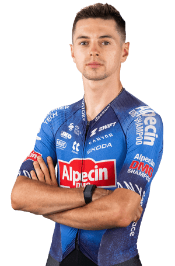

Francesco Busatto
Datos personales
- Francesco Busatto
- 01/11/2002
- Italia
- ALPECIN-PREMIER TECH/BEL
- 102

Datos equipo
- Alpecin-Premier Tech
- Intermaché-Wanty
- Circus
- ReUz
- Technord
- General Store
- Essegibi
- F.Lli Curia
- UC Trevigiani
- Campana Imballaggi
- GS Guadense Rotogal
Temporada 2025
| Nombre del dato | Resultado |
|---|---|
| Equipo | Intermarché-Wanty |
| Carreras | 10 |
| Victoria de etapa | 0 |
| Victoria de clasificación general | 0 |
| Podios conseguidos | 0 |
| Mejor puesto | 4º |
| Top 10 | 5 |
| Maillots especiales conseguidos | 0 |
Multimedia
Equipo Alpecin-Premier Tech en la Vuelta Ciclista a España 2026